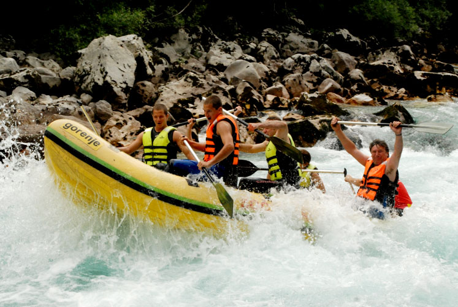

SRBIJA
Nekadašnji težak i opasan posao dopremanja drvenih stabala planinskim rekama iz nepristupačnih šuma, vremenom je postao turistička atrakcija.
Splavariti ili se spuštati gumenim čamcima niz brzake planinskih reka pravi je izazov za modernog turistu željnog uzbuđenja i avantura. U Srbiji su ovi
sportovi redovni godišnji turističko-rekreativni događaji na rekama Drini, Uvcu, Limu, Ibru i nekim manje poznatim planinskim vodama.
Splavarenje je spuštanje niz reku na deblima povezanim u splav. Rafting je spuštanje niz brze planinske reke u specijalnim gumenim čamcima, a svaki
putnik je snabdeven prslukom za spasavanje, posebnim odelom i čizmama. Čamcima upravljaju skiperi, rafteri, iskusni poznavaoci reke.
Turističko-rekreativna manifestacija „Drinska regata“ nastala je 1990. i održava se svake godine u julu, na relaciji Perućac – Rogačica, u dužini od 25
km. U letnjim mesecima, organizuje se i „Spust niz Drinu“ – plovidba Drinom svim vrstama čamaca, po potrebi svakog dana, od Perućca do Bajine Bašte, do
Rogačice ili čak do varoši Ljubovije. Traje dva do četiri sata ili čak ceo dan.
Reka Uvac teče između severnih padina Zlatara i južnih ogranaka Zlatiborskog masiva. Klisura reke Uvac poznata je po svojim magičnim meandrima. „Regata
kanjonom reke Uvac“ polazi od Uvačkog jezera, obilazi staništa beloglavog supa, Ledenu pećinu i zidine Jerininog grada.
Na Limu se organizovano splavari od 2001. Sezona splavarenja počinje obično u maju, jer je tada voda na Limu najviša i najatraktivnija. Brzaci i huk
vode sigurno će ostati u sećanju smelih splavara, a na ovu reku se može otići i kasnije, krajem jula ili u avgustu, ali sva ona snaga i uzbuđenje
pomalo usahnu. Reka nije opasna i dobra je za turiste koji nisu iskusni u splavarenju, a žele lep provod.
 Ibar protiče kroz živopisne predele zapadne Srbije, a za rafting podesno vreme počinje u maju i završava se u oktobru. U maju i junu vodostaj na Ibru je veći zbog topljenja snega, tako da brzaci dostižu 4. i 5. stepen divljih voda. U letnjem periodu Ibar postaje bistar, boja mu je bistroplava, a zbog toplote vode podesan je za kupanje. Rafting avantura niz „Dolinu jorgovana“ počinje u Ušću, gde se reka Studenica uliva u Ibar. U ovom delu Ibar je prepun tesnaca, brzaka i virova, koje zatim smenjuje miran tok reke. Posle tri i po sata ova avantura se završava ispod srednjevekovnog grada Magliča, a tura je duga 25 km. Nešto lakša tura počinje ispod Magliča, a završava se kod Mataruške Banje i duga je 16 km. Na Ibru se održava i turističko-sportska manifestacija „Veseli spust“ krajem juna, kada velika flota svih vrsta plovila, sa nekoliko hiljada učesnika, istovremeno plovi niz brzake Ibra.